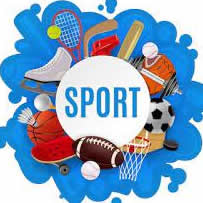

PHILOSOPHY OF SPORT
PHIL 218 (W03)
TENTATIVE CLASS SCHEDULE
FALL 2026

9-10 PRACTICAL MATTERS/OVERVIEW--PHILOSOPHY & SPORT(S)
9-15 OVERVIEW--TOPICS & INTRODUCTION--What is/are “Sport(s)? Definition?--Ethical Theories--Dr. L
9-17 ETHICAL ISSUES IN SPORT--QUIZ #1 (FP CH. 1) (GROUP #1 REACTION PAPERS DUE)
9-22 FP CH. 2
9-24 SPORTS & SOCIETY--QUIZ #2--SICS CH.1-3 (GROUP #2 REACTION PAPERS DUE)
9-29 COACH TAUER and FP CH. 7--P1--COMMERCIALIZATION OF SPORT
10-1 QUIZ #3 (CASE STUDY #1--WRESTLING)--P2 (GROUP #1 REACTION PAPERS DUE)
10-6 WOMEN & SPORTS SICS CH. 27-29--P3
10-8 QUIZ #4 FP CH. 5 (GROUP #2 REACTION PAPERS DUE)--P4
10-13 SPORTS & THE MEDIA SICS CH.7-9--P5
10-15 COACH RIVERSO--QUIZ #5 (GROUP #1 REACTION PAPERS DUE)
10-20 COACH TROTTER SPORTS & SOCIAL CLASS SICS CH. 21-23
10-22 AD DR. PHIL ESTEN QUIZ #6 (GROUP #2 REACTION PAPERS DUE)
10-27 SPORTS & EDUCATION (Case Study#2--BULL RIDING)--P6 (Case Study #6--College Football)--P7 SICS CH. 18-20
10-29 FP CH. 6 (GROUP #1 REACTION PAPERS DUE)--QUIZ #7--P8
11-3 PED'S & SPORTS & DEVIANCE SICS CH. 15-17??? and FP CH. 4--P9
11-5 SICS CH.15-17??? OR GUEST VIDEO--QUIZ #8 (GROUP #2 REACTION PAPERS DUE)
11-10 THE PROBLEM OF EXCESS--SICS CH. 12-14--P10 and SICS CH. 15-17???--P11
11-17 FP. CH. 3--P12--QUIZ #9--(GROUP #1 REACTION PAPERS DUE)
11-19 COACH SINN
11-24 SELF-KNOWLEDGE & SPORTS (Case Study #4--TENNIS & SPORTSMANSHIP)--P13 FP CH. 8--QUIZ #10 (GROUP #2 REACTION PAPERS DUE)--P14
11-26 NO CLASS--THANKSGIVING BREAK!!
THE MIND & BODY IN SPORTS/SPORT AND SEXUALITY--SICS--CH. 30-32--P15
11-20 QUIZ #11 (Case Study #5--BKFIGHTING)(GROUP #1 REACTION PAPERS DUE)--P16
11-25 AESTHETICS & SPORTS--QUIZ #12 SICS CH. 10-11 (GROUP #2 REACTION PAPERS DUE)--P17
11-26 NO CLASS--THANKSGIVING BREAK!!
12-1 WHAT WE DO AND WHY IN SPORTS (Case Study #3--RUNNERS HELPING RUNNERS)SICS CH. 4-6--P18
12-3 COACH CARUSO??? (GROUP #1 REACTION PAPERS DUE)--QUIZ #13
12-8 SPORTS AND RELIGION--CATHOLIC PERSPECTIVES ON SPORTS--P19 and P20 and SICS CH. 33-35 and 24-26--P21 and P22 (GROUP #2 REACTION PAPERS DUE)
12-10 SPORTS AND ? FINAL TOPICS--QUIZ #14--ONLINE--LAST CLASS!!
12-15
12-16 STUDY DAY
12-17 ***FINAL EXAM? (1:30-3:30 PM--W03) OR FINAL PAPER DUE--11:59 pm ***